Une exploration perpétuelle des matériaux bruts, des textures organiques et des teintes naturelles pour façonner des environnements intemporels. Minéral, végétal, chaleur et tissage — chaque matière raconte une histoire.
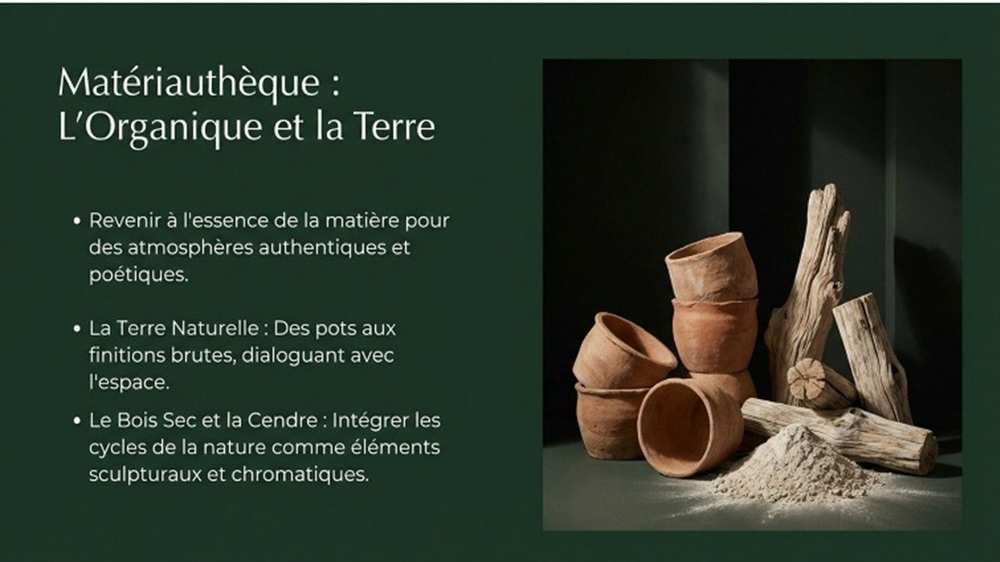
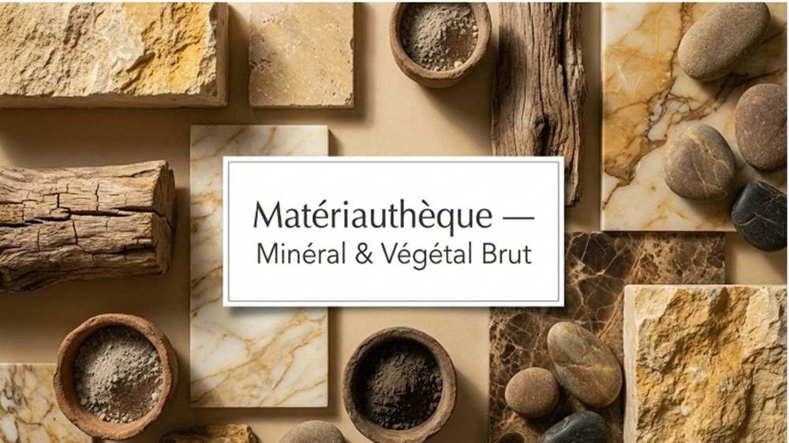
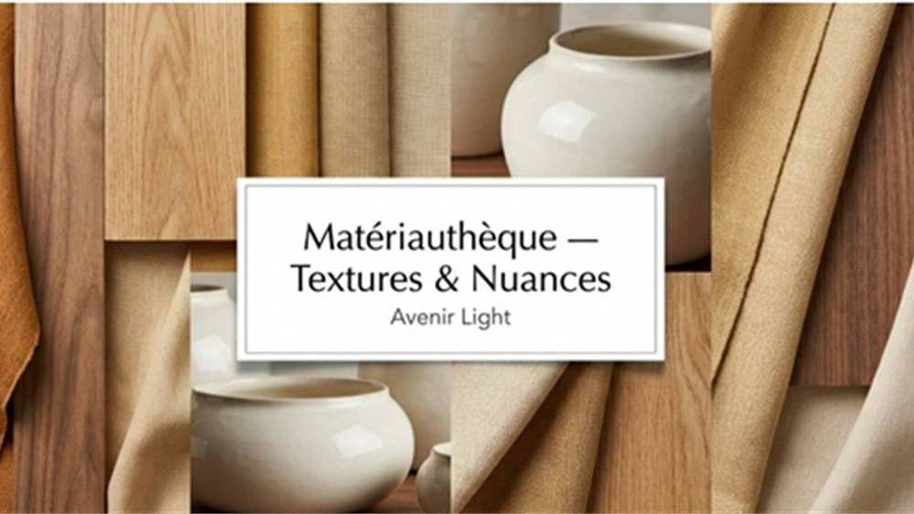
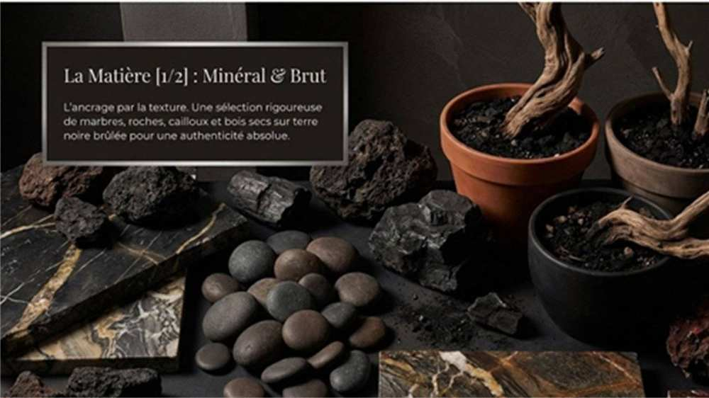
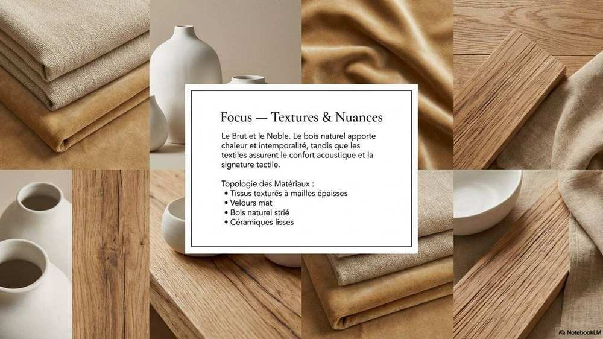
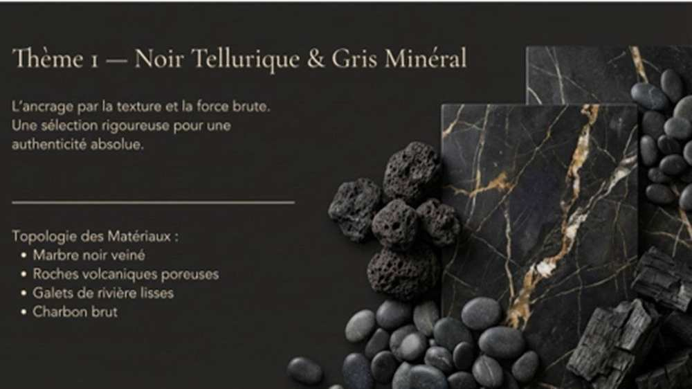
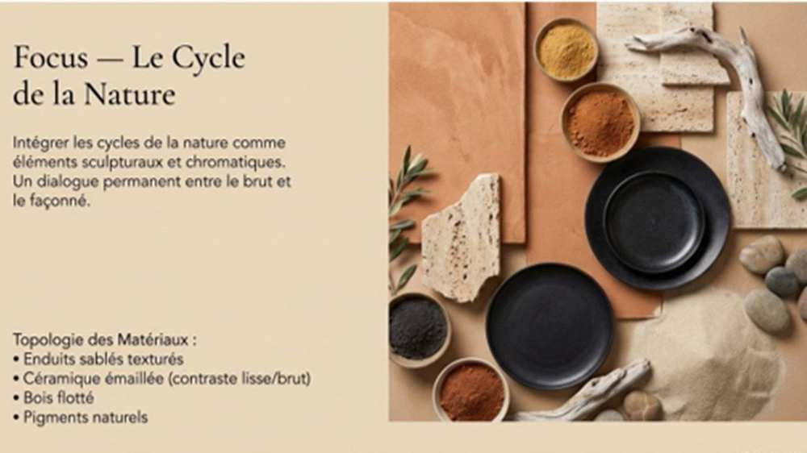
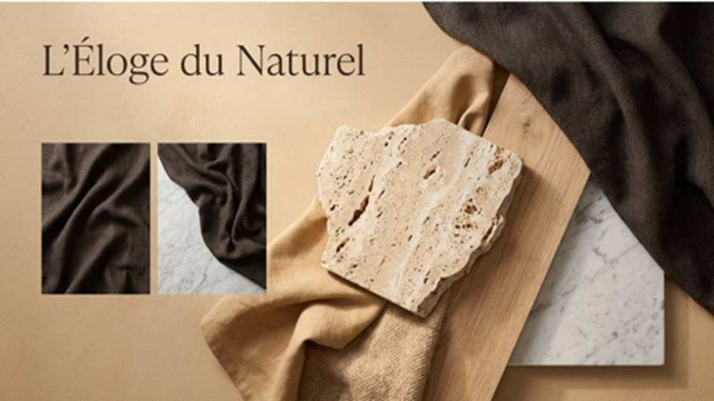
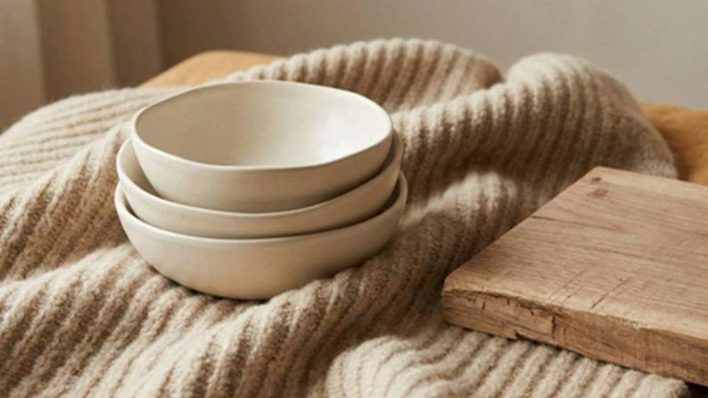
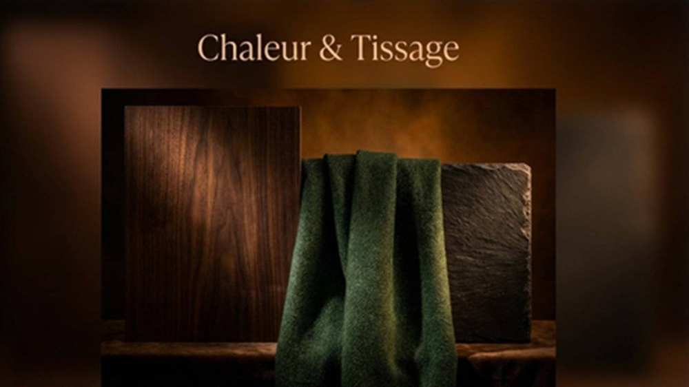
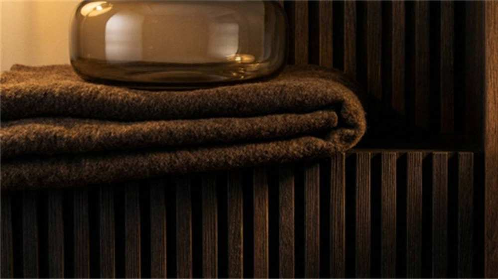
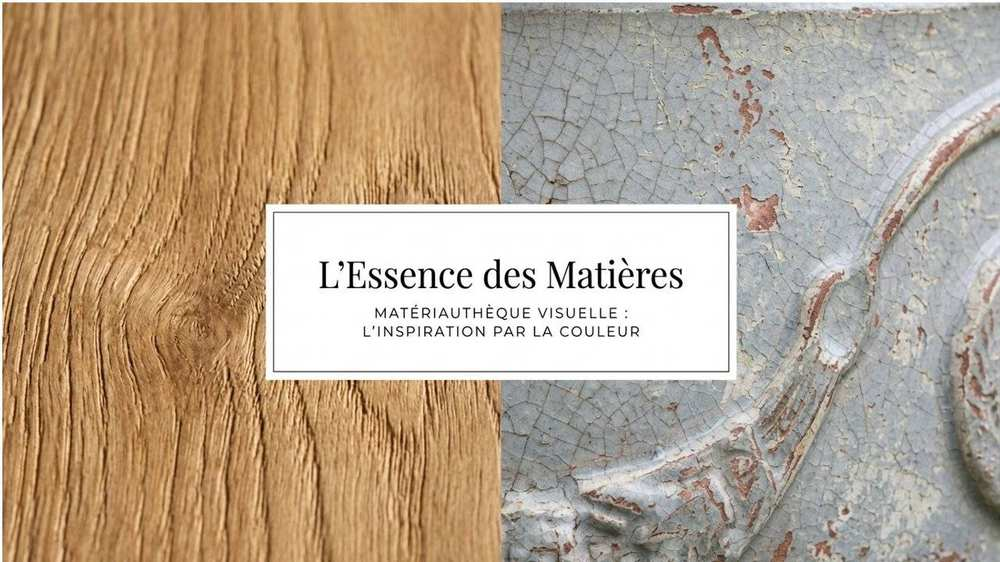